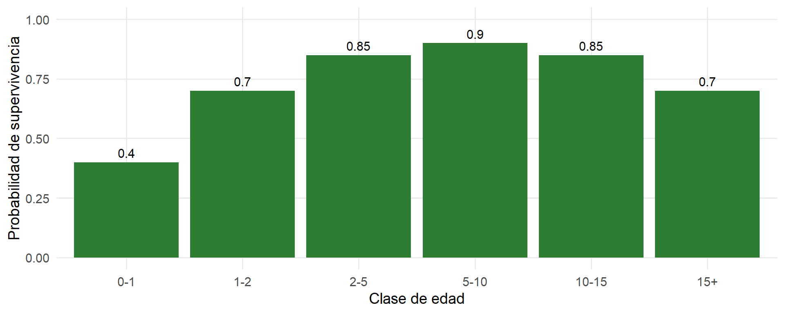
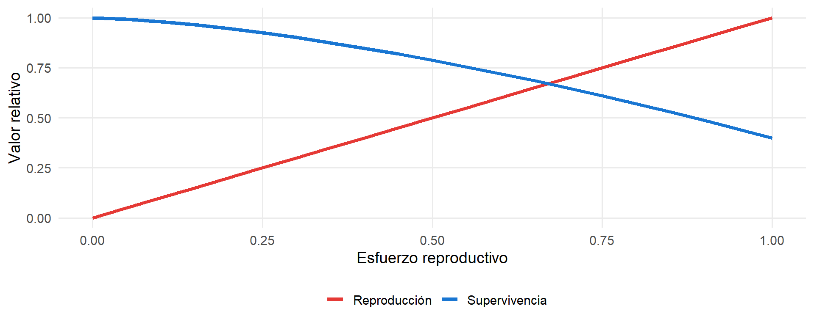
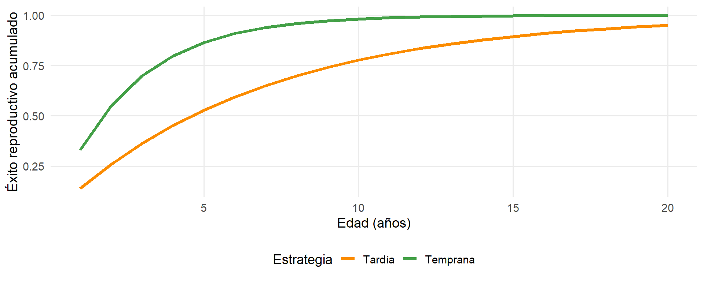
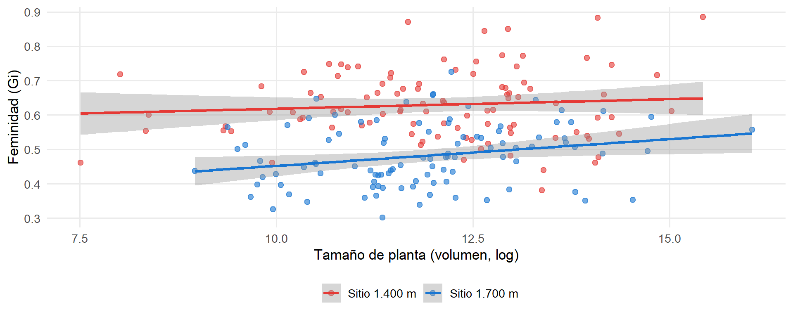

Clase 1.2 — Teoría y discusión
14/10/2026
Clase 1.2 — Eficacia biológica
Carlos Iván Espinosa Universidad Técnica Particular de Loja
Al finalizar esta sesión, podrás:
En un fragmento de bosque de la hoya de Loja, un árbol de Cedrela montana produce 5.000 semillas en un año, mientras que otro produce solo 500.
¿El primero tiene más éxito que el segundo?
A primera vista, el primero parece tener más éxito: deja más descendientes.
Pero:
Dejar más descendientes no siempre es mejor.
La eficacia biológica (o fitness) es la contribución relativa de un individuo a la siguiente generación.
En términos simples: cuántos descendientes deja un individuo que llegan a reproducirse.
No es cuántos hijos tiene, sino cuántos hijos fértiles deja.
Número total de descendientes que un individuo produce en su vida.
Ejemplo: una hembra de Tremarctos ornatus tiene 2 crías. Un árbol de Cedrela montana produce miles de semillas.
Es una medida directa, pero poco útil para comparar entre especies.
Contribución de un individuo comparada con otros de la misma población.
Ejemplo: si el árbol A deja 200 descendientes viables y el árbol B deja 100:
\[\text{Fitness relativo de A} = 2\] \[\text{Fitness relativo de B} = 1\]
A tiene el doble de éxito reproductivo que B.
La selección natural no actúa sobre números absolutos, sino sobre diferencias relativas.
Un individuo con fitness relativo mayor que el promedio de la población tiene más probabilidades de que sus genes pasen a la siguiente generación.
El fitness se mide siempre en el contexto de la población, no en un individuo aislado.
Si un árbol tiene muchos descendientes en un año, pero esos descendientes no sobreviven ni se reproducen, ¿tiene un fitness alto o bajo?
El fitness no es una sola cosa. Se descompone en tres componentes que actúan en distintas etapas de la vida:
Los vemos uno por uno.
Definición: la probabilidad de que un individuo sobreviva hasta cierta edad.
Ejemplo local: en Tremarctos ornatus, la supervivencia de las crías durante su primer año es baja. Si una hembra tiene dos crías pero solo una llega a la adultez, su fitness efectivo es la mitad de lo que parecía.

Definición: el número de descendientes que un individuo produce.
Ejemplo local: un árbol de Cedrela montana puede producir miles de semillas, pero solo unas pocas germinan y llegan a la adultez.
La fecundidad puede medirse como:
Alta fecundidad no garantiza fitness alto si la supervivencia de los descendientes es baja.
Definición: la energía y recursos que un individuo invierte en la reproducción, en lugar de invertirlos en su crecimiento o supervivencia.
Ejemplo local: un ave del bosque seco de Catamayo que dedica toda su energía a alimentar a sus polluelos puede tener menos reservas para sobrevivir al siguiente invierno.
El esfuerzo reproductivo es el concepto central de los trade-offs.
Piensa en una especie de Loja que conozcas. ¿Cuál de los tres componentes del fitness crees que es más crítico para esa especie? ¿Por qué?
Un trade-off es un compromiso entre dos rasgos o funciones que compiten por los mismos recursos limitados.
En la reproducción, los trade-offs son la regla, no la excepción.
Ganar en una cosa suele significar perder en otra.
Invertir energía en reproducirse reduce los recursos disponibles para sobrevivir.

Ejemplo local: un árbol de Cedrela montana que produce una cosecha masiva de semillas puede quedar debilitado y ser más susceptible a sequías o plagas al año siguiente.
Producir muchos descendientes pequeños o pocos descendientes grandes.
| Estrategia | Ejemplo local | Ventaja | Desventaja |
|---|---|---|---|
| Muchos y pequeños | Cedrela montana | Alta dispersión | Baja supervivencia por semilla |
| Pocos y grandes | Tremarctos ornatus | Alta inversión parental | Bajo número |
Ninguna estrategia es “mejor”: ambas funcionan en distintos contextos ecológicos.

Ejemplo local: un árbol que se reproduce a los 10 años tiene más probabilidades de dejar descendencia que uno que espera 30 años.
¿Qué trade-off te parece más importante en una especie de Loja que conozcas? ¿Por qué?
El valor reproductivo es la contribución esperada de un individuo a las generaciones futuras.
No es solo su capacidad reproductiva actual. Es el producto de dos cosas:
\[\text{Valor reproductivo} = \text{Capacidad reproductiva} \times \text{Probabilidad de supervivencia futura}\]
No basta con poder reproducirse mucho hoy; también hay que sobrevivir para hacerlo mañana.
Considera dos hembras de Tremarctos ornatus en el Podocarpus:
Hembra A — joven
→ Valor reproductivo alto
Hembra B — vieja
→ Valor reproductivo bajo
No todos los individuos contribuyen igual a la siguiente generación.
Proteger a los juveniles de una población puede ser más efectivo que proteger a los adultos.
Imagina dos plantas de Croton aff. wagneri en Catamayo:
- Planta A: produce 500 flores femeninas, sobrevive 3 años.
- Planta B: produce 200 flores femeninas, sobrevive 5 años.
¿Cuál tendría mayor valor reproductivo? Justifica.
Vélez-Mora et al. (2020). Environmental drivers of femaleness of an inter-Andean monoecious shrub. Biotropica 53:17–27.
Un estudio local sobre cómo el ambiente afecta la expresión sexual de una planta.
Monoica: una planta que tiene flores femeninas y masculinas separadas en el mismo individuo.
Dioica: una planta que tiene solo flores femeninas o solo masculinas por individuo.
Croton es monoico: cada planta puede producir flores de ambos sexos.
El estudio mide la proporción de flores femeninas de cada planta:
\[G_i = \frac{o_i}{o_i + p_i\left(\sum o_i / \sum p_i\right)}\]
El índice varía entre individuos y entre sitios.
Tres hallazgos principales:

¿Por qué esta planta es un buen caso para estudiar fitness?
La planta ajusta su esfuerzo reproductivo según el ambiente.
Si las plantas más femeninas producen más semillas, pero también mueren antes por el costo de producir flores femeninas, ¿cómo evaluarías su fitness a lo largo de toda la vida?
Pensando en una especie de Loja que conozcas, ¿qué trade-off te parece más importante? ¿Cómo crees que afecta su valor reproductivo?
Gracias.